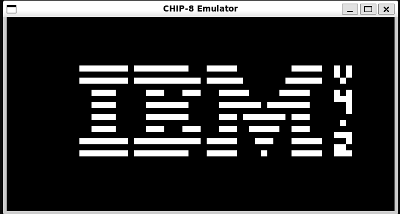
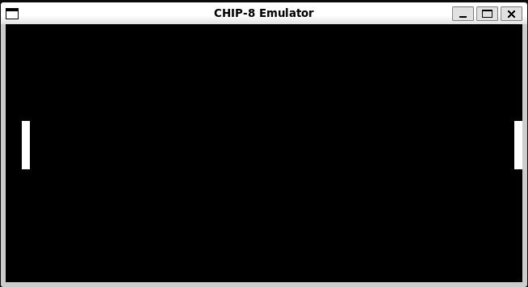

C / Emulator
CHIP-8 Emulator
Een vrijetijdsproject rond emulatorontwikkeling, low-level logica en klassieke systemen, waarbij ik stap voor stap leerde hoe eenvoudige hardwareconcepten softwarematig nagebootst kunnen worden.


Waarom CHIP-8?
CHIP-8 is een goede manier om emulatorconcepten te leren zonder meteen met een heel complex systeem te starten. Het project combineert geheugen, instructies, registers, invoer en rendering in een overzichtelijk geheel, waardoor elk onderdeel duidelijk te begrijpen en te testen is.
Wat ik eruit haalde
Dit project maakte low-level gedrag veel concreter. Door instructies zelf te interpreteren en uit te voeren, kreeg ik meer gevoel voor hoe software dichter bij hardware werkt en hoe kleine fouten direct zichtbaar worden in het gedrag van een systeem.